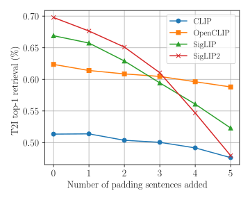
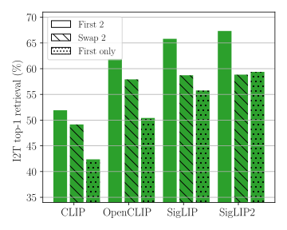
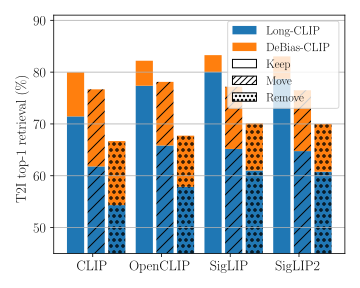
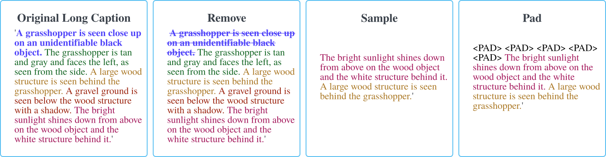

Biases in CLIP Text Encoders

First, we show that CLIP text encoders are biased towards early tokens by evaluating retrieval on the first 2 sentences of DOCCI. We add padding uninformative padding sentences ("This is a photo.") before the caption. We find that simply offsetting the informative part of the caption leads to a significant reduction in performance.

Next, we show that even in the early tokens, sentence order matters. We again evaluate retrieval on the first 2 sentences of DOCCI, this time considering the case where we permute the order of sentences (Swap 2) and where we only use the first sentence. We see that for all CLIP models, permuting the order of the sentences (and thus putting the most informative first sentnce second) reduces performance. Notably, in the Swap 2 case, this reduction is so significant for SigLIP models that any additional information added by the second sentence is balanced by less efficient use of the summary sentence.

Finally, we evaluate the similar cases for models that are trained with long captions following the baseline Long-CLIP. Here, we use the full long caption, and consider permuting the first and fourth sentences in the Move case. Again, all models show similar reduction in performance. Compared to the baseline, our proposed DeBias-CLIP models have a consistently better performance and show less performance drop under the sentence permutation test.
DeBias-CLIP: 3 Simple Text Augmentations

DeBias-CLIP follows the Long-CLIP baseline and train on long caption datasets. We similarly train with two captions: the full original caption and augmented caption. Our augmented caption replaces training with the first caption sentence in Long-CLIP, which is the cause of the text bias issue. Our augmented caption uses three simple sentence-level augmentations.
First, we simply remove the first sentence at the start of each caption. It is often a summary sentence that is more information-dense than the rest of the caption, and so it contains enough information to optimize the text-image contrastive loss. This meanes that the model doesn't learn to fully use the long captions.
We find that this simple trick greatly improves long text retrieval, but it can reduce short text performance. To counteract this, we propose to still train on shorter captions by randomly randomly subsampling the remaining sentencess, which also makes the training task harder by reducing the information.
However, we find that subsampling does not greatly improve performance and can even have a negative impact. We believe this is due to training with less informative text tokens at the early positions leads to a larger drift away from the original pretrained CLIP models, which are effective for short text retrieval. To avoid this and to continue training the later positional embeddings, we add padding tokens before the caption text, which pushes the information deaper in the context window. Because we also train with the original full caption, the early positions are mostly trained with the dense summary sentence.
Long-Context Retrieval Visualizations

Generation with SDXL

BibTeX
@article{lavoie2026clip,
author = {Lavoie, Marc-Antoine and Mahmoud, Anas and Zaimi, Aldo and Tchango, Arsene Fansi and Waslander, Steven L},
title = {CLIP Is Shortsighted: Paying Attention Beyond the First Sentence},
journal = {arXiv preprint arXiv:2602.22419},
year = {2026},
}